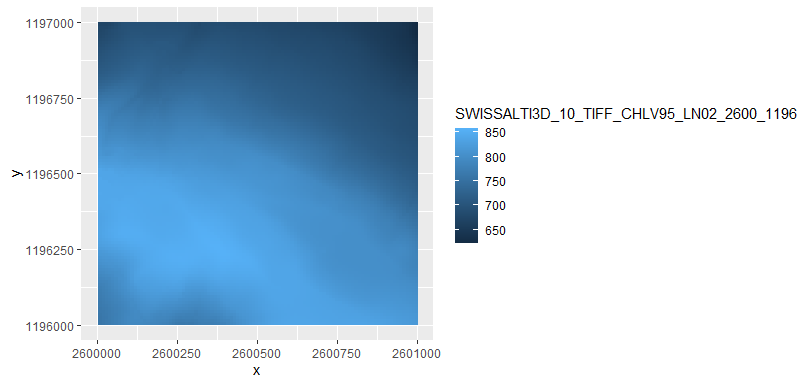
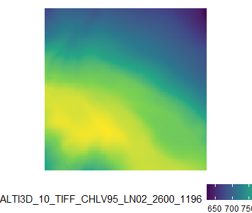
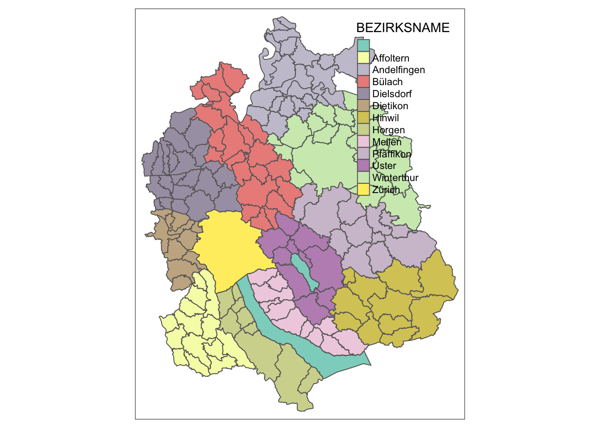
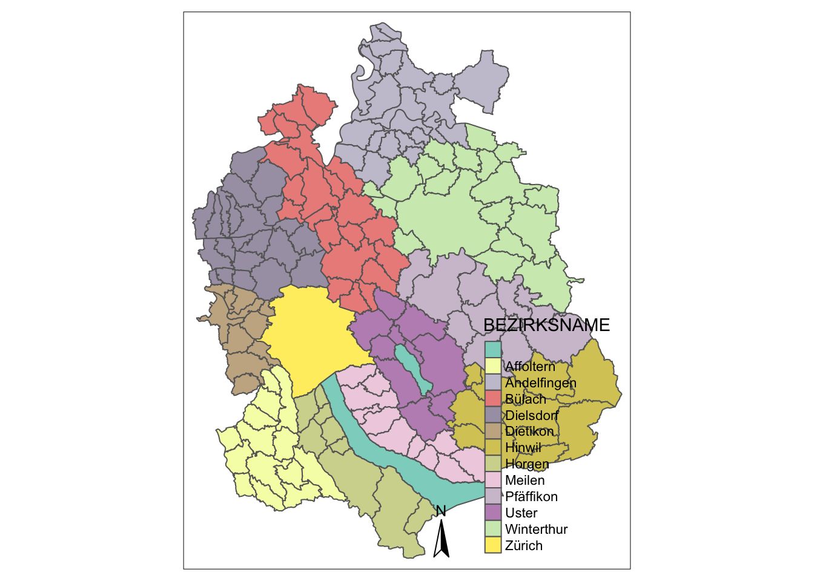

3.1 Static Maps
For this chapter, you will need the following packages and datasets:
library(arc2r)
library(sf)
library(raster)
library(ggplot2)
data("gemeindegrenzen_zh")
data("swissAlti3D")As we saw in chapter 2.1, we can quickly visualize an sf object by simply calling plot. This will return a small multiple of your geodata, where each facet is colour coded based on a column.
plot(gemeindegrenzen_zh)
You will get one facet for each column, where the maximum number of facets is set to 9 by default. I find this behaviour pretty annoying, since I usually just want get a quick look at the data in space, and these small multiples take ages to render. There are several workarounds to prevent small multiples:
- Extract the geometry from the
sfobject and just plot that - Specify the column which should colourcode your data
- Specify
max.plot = 1to just plot 1 facet (using the first column in your dataset for colour coding) - Set the option
sf_max.plotto 1 withOption(sf_max.plot = 1)(this will persist throughout yourRSession)
plot(st_geometry(gemeindegrenzen_zh)) # 1
plot(gemeindegrenzen_zh["BEZIRKSNAME"]) # 2
plot(gemeindegrenzen_zh, max.plot = 1) # 3
options(sf_max.plot = 1) # 4
plot(gemeindegrenzen_zh)We dont have the “problem” of facets with raster data, so we can simply call plot() on a raster object to visualize it.
plot(swissAlti3D)
The plot() method is fine for quick view of the data, but as you want to add more layers, legend etc. plot() becomes complicated. There are many alternative methods to visualizing spatial data, we will showcase our favourite methods here.
3.1.1 Package ggplot2
If you are familiar with ggplot2 you can rejoice: Plotting sf objects has become very easy with this package. If you do not know this package yet, we recommend you familiarize yourself with it first before diving into this chapter. We will continue to work with the datasets used above
3.1.1.1 sf objects
ggplot(gemeindegrenzen_zh) +
geom_sf()
In its most basic form, we can visualize the geometry of our sf object.As always in ggplot2, if you want to use a column from your dataset as an input for, say, colour, you need to specify this with aes():
ggplot(gemeindegrenzen_zh) +
geom_sf(aes(fill = BEZIRKSNAME))
To change the default graticules from WGS84 to a custom Coordinate System, we can use the argument datum in coord_sf and call the EPSG Code of our desired coordinate system.
ggplot(gemeindegrenzen_zh) +
geom_sf(aes(fill = BEZIRKSNAME)) +
coord_sf(datum = 2056)
How we can use our standard ggplot2 methods to polish this plot:
ggplot(gemeindegrenzen_zh) +
geom_sf(aes(fill = BEZIRKSNAME), colour = "white") +
labs(title = "Gemeinden des Kantons Zürich nach Bezirk",fill = "") +
theme_void() +
theme(legend.position = "bottom")
3.1.1.2 raster objects
While sf objects are very easily integrated in ggplot2, raster data is a little harder. There are various ways to plot a raster object with ggplot2. A simple, adhoc approach is converting the RasterLayer object into a data.frame and then plotting it with geom_raster.
swissAlti3D_df <- as.data.frame(swissAlti3D,xy = TRUE) # xy = TRUE adds the x and y coordinates to our dataframe as columns
ggplot(swissAlti3D_df, aes(x, y, fill = SWISSALTI3D_10_TIFF_CHLV95_LN02_2600_1196)) +
geom_raster()
Note that this approach, ggplot is not aware of the coordinate system assigned to our dataset. The x and y coordinates from our dataframe are assumed to be in a cartesian coordinate system. This implies two things:
- This approach only works with datasets in a projected coordinate system (where the raster is assumed to be on a plane)
- We have to specify that the coordinate system in the two direction are equal with
cord_equal()(coord_sf()will not work if we don’t have anysfobjects)
//todo add example of WGS84 raster
ggplot(swissAlti3D_df, aes(x, y, fill = SWISSALTI3D_10_TIFF_CHLV95_LN02_2600_1196)) +
geom_raster() +
scale_fill_viridis_c() +
theme_void() +
coord_equal() +
theme(legend.position = "bottom")
3.1.2 Package tmap
While ggplot2 was extended to work with spatial data, the package tmap was specifically designed to create maps. The developer created this package leaning on the “grammar of graphics” approach which is also implemented in ggplot2, so many of the concepts are the same (e.g. the concept of “layers” and using the +-sign). One main difference is that tmap does not use NSE, so column names always need to be quoted.
library(tmap)
tmap_mode("plot") # <- to create static plots
## tmap mode set to plotting
tm_shape(gemeindegrenzen_zh) +
tm_polygons(col = "BEZIRKSNAME") 
The fact that tmap is designed for maps makes it much easier to add map elements, such as a North Arrow.
tm_shape(gemeindegrenzen_zh) +
tm_polygons(col = "BEZIRKSNAME") +
tm_compass()
It also means that visualizing a RasterLayer is built in to the package:
tm_shape(swissAlti3D) +
tm_raster()
The most amazing thing about tmap probably is tmap_mode("view"). Run this code and then the two chunks above, you will be amazed. Learn more about this in chapter Interactive Maps.